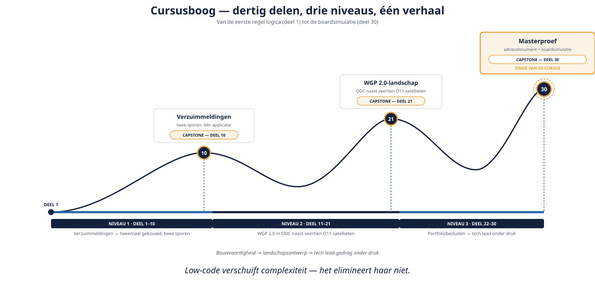

Deel 30 — Masterproef: examensimulatie en verdediging
Slidedeck · Ductus-cursus OutSystems · Niveau 3 — Expert · deel 30 van 30 · 15 slides
Slide 1 — Title: OutSystems: Leidend
OutSystems: Leidend
Deel 30 — Masterproef: examensimulatie en verdediging
Twee dagdelen
Slide 2 — Section: Waar deze cursus je heeft gebracht
Waar deze cursus je heeft gebracht
Slide 3 — Bullets: De hele boog
De hele boog
- Niveau 1: Verzuimmeldingen, tweemaal gebouwd
- Niveau 2: WGP 2.0 als landschapsontwerp
- Niveau 3: portfoliobesluiten, tech lead onder druk
- Nu: alles samen, in één scenario

Slide 4 — Section: Het scenario
Het scenario
Slide 5 — Statement: Acht weken.
Acht weken.
De hostingpartij trekt de stekker eruit.
Slide 6 — Bullets: Wat er op het spel staat
Wat er op het spel staat
- Resterende O11-satellieten, inclusief het BPT-proces
- Drie maanden vóór de Wtp-deadline
- Externe, niet te heronderhandelen beslissing
Slide 7 — Statement: Dit is bewust niet allemaal haalbaar.
Dit is bewust niet allemaal haalbaar.
De opgave is: een eerlijk advies.
Slide 8 — Section: Dagdeel A — Het adviesdocument
Dagdeel A — Het adviesdocument
Slide 9 — Bullets: Checklist
Checklist
- Realistische inschatting (deel 23, 25)
- Minstens één beargumenteerd "nee, dit niet"
- Risicologboek (deel 19, 28)
- Toetsing aan de niet-onderhandelbare grenzen (deel 17, 27)
Slide 10 — Section: Dagdeel B — De boardsimulatie
Dagdeel B — De boardsimulatie
Slide 11 — Table: Vier rollen, 35 minuten
Vier rollen, 35 minuten
| Rol | Focus |
|---|---|
| Voorzitter Architecture Board | Architecturale samenhang |
| IT-directeur | Operationele haalbaarheid, rollback |
| Stuurgroeplid | Externe druk — "kan het niet toch allemaal" |
| Privacyfunctionaris | AVG/audit onder tijdsdruk |
Slide 12 — Statement: Een overtuigend "nee, dit niet"
Een overtuigend "nee, dit niet"
weegt zwaarder dan een oppervlakkig "ja, alles kan."
Slide 13 — Table: Rubric — vijf criteria
Rubric — vijf criteria
| Criterium |
|---|
| --- |
| Realisme van de inschatting |
| Kwaliteit van het "nee, dit niet" |
| Omgaan met externe druk |
| Compliance onder tijdsdruk |
| Risicobewustzijn |
Slide 14 — Bullets: De hele cursus in één zin
De hele cursus in één zin
- Low-code verschuift complexiteit — het elimineert haar niet
- Twee sporen, gedeelde principes, verschillende uitvoering
- Van bouwer naar tech lead: adviseren, niet besluiten
- Grenzen bewaken is professionaliteit, geen obstructie
Slide 15 — Section: Einde van de cursus — Cursusboog compleet
Einde van de cursus — Cursusboog compleet